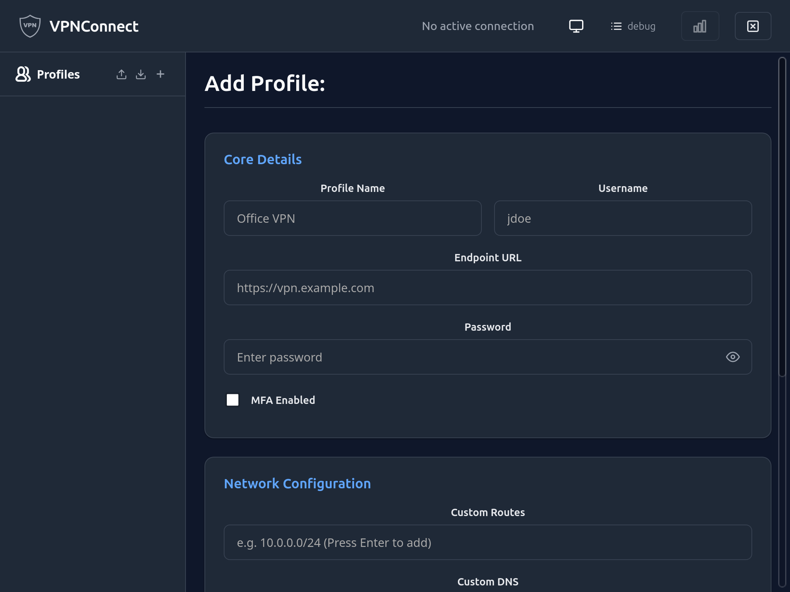
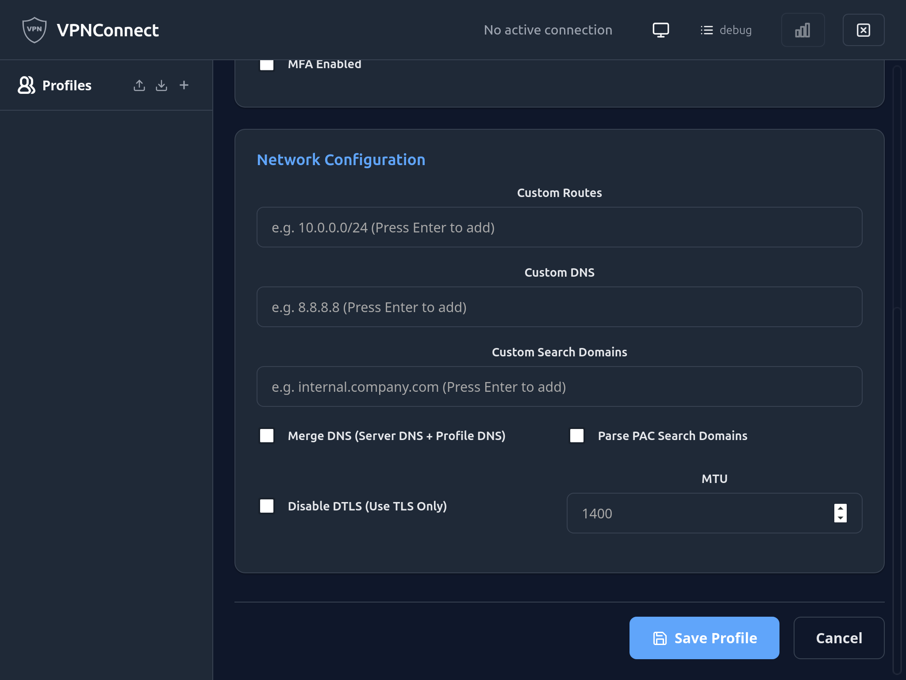
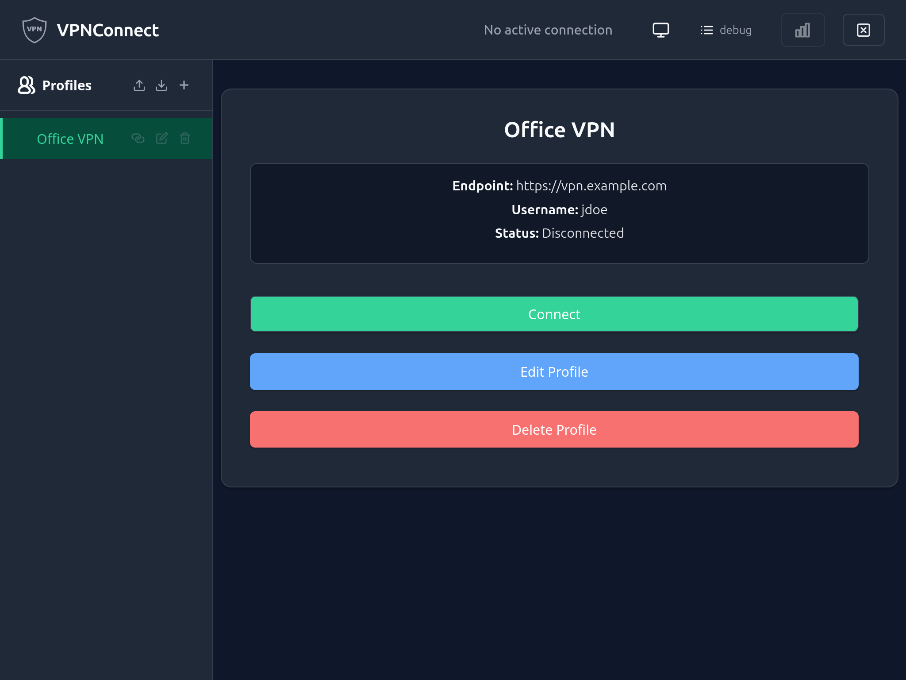

How to manage VPN profiles
This guide shows how to create, list, edit, export, import, and remove VPN profiles. A profile stores the endpoint URL, username, and connection options; the password is kept separately in the OS keychain.
For a full description of all flags, see the CLI reference.
Create a profile
From the CLI
vpnconnect profile add \
--name work \
--endpoint https://vpn.example.com \
--username alice
You will be prompted for a password; it is stored in the OS keychain. To skip password storage:
vpnconnect profile add \
--name work \
--endpoint https://vpn.example.com \
--username alice \
--store-password=false
Create a profile with MFA enabled
For endpoints that use browser-based MFA (any identity provider):
vpnconnect profile add \
--name work-mfa \
--endpoint https://vpn.example.com \
--username alice@example.com \
--mfa \
--store-password=false
To also automate Microsoft Azure AD / Office 365 credential entry, add --mfa-automate:
vpnconnect profile add \
--name work-mfa \
--endpoint https://vpn.example.com \
--username alice@example.com \
--mfa --mfa-automate \
--store-password=false
See How to connect with MFA for details on both modes.
From the UI
Click the + icon in the Profiles sidebar header. The Add Profile form opens with two sections.
Core Details — fill in Profile Name, Username, Endpoint URL, and Password. Check MFA Enabled if your endpoint requires browser-based authentication.

Network Configuration — optionally set Custom Routes, Custom DNS, Custom Search Domains, MTU, and transport options. Click Save Profile when done.

List profiles
vpnconnect profile list
Output:
NAME ENDPOINT USERNAME MFA MERGE_DNS CREATED
---- -------- -------- --- --------- -------
work https://vpn.example.com alice No No 2026-01-15
work-mfa https://vpn.example.com alice Yes No 2026-03-01
Update the stored password
vpnconnect profile set-password --name work
You will be prompted for the new password. To supply it non-interactively (e.g. in a script):
vpnconnect profile set-password --name work --password "new-secret"
Rename a profile
vpnconnect profile rename --old-name work --new-name work-vpn
Remove a profile
From the CLI
vpnconnect profile remove --name work
You will be asked to confirm. The profile file and its keychain entry are both deleted.
From the UI
Select the profile in the sidebar, then click Delete Profile (red button) in the detail panel.

Export and import profiles
Exporting saves profile configuration to a JSON file so you can back it up or move it to another machine. Passwords are never included in exports — you will need to re-enter them after importing.
Export from the UI
- Single profile: open the profile in the editor and click Export in the action bar. A
<name>.jsonfile is downloaded. - All profiles: click the download icon in the Profiles sidebar header. A
vpnconnect-profiles.jsonfile is downloaded containing all profiles as a JSON array.
Import from the UI
Click the upload icon in the Profiles sidebar header and select a .json file. The file may contain a single profile object or an array of profiles. If an imported profile name conflicts with an existing one, it is renamed to <name> (imported) automatically. After import, set the password for each new profile via the profile editor or:
vpnconnect profile set-password --name "work (imported)"
Notes
- Profile files are stored at a platform-specific location:
- Linux / macOS:
~/.config/vpnconnect/profiles/ - Windows:
%APPDATA%\vpnconnect\profiles\ - Passwords are stored using the native OS keychain (libsecret on Linux, Keychain on macOS, Windows Credential Manager).
- The maximum number of profiles is capped. Run
vpnconnect profile listto see the current count against the limit.